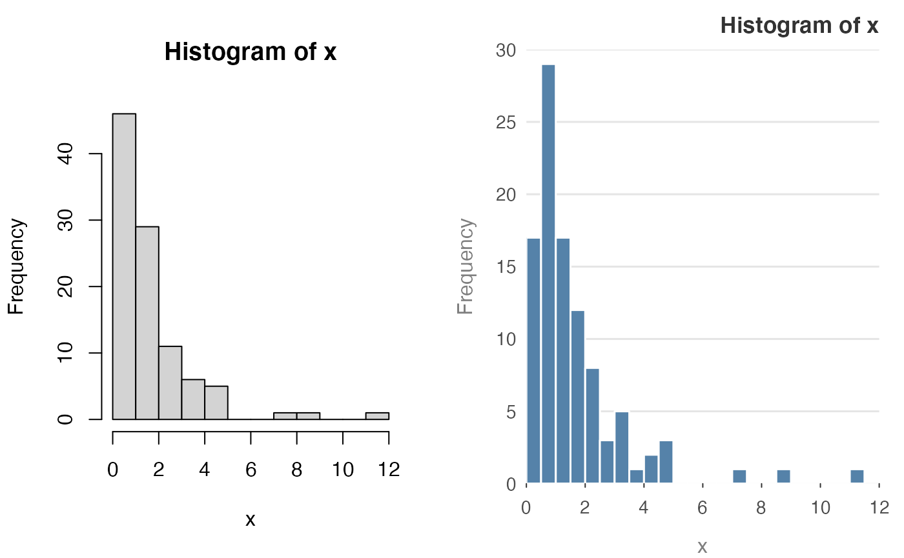
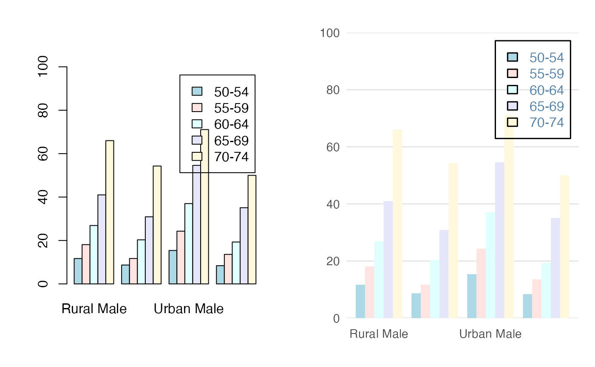

Introduction
The prettyB changes the default values of some standard plotting functions. It is not a replacement for ggplot2 (or other plotting packages), instead, it’s meant to just make the base graphics a little bit nicer. Due to the underlying structure of base graphics & S3 objects, some things aren’t possible. In particular, changing how non-exported plot-methods are displayed.
The general idea is the argument signitures are exactly the same as base graphics. But there are just a bit prettier. The current methods that are available are
Histogram examples
The important point to note with this histogram method is the breaks argument now has a new default. Instead of breaks = "Sturges", the default is breaks = "fd". In general, this is a better default (but not always)

Standard arguments work as well
y = rnorm(100)
hist(y, main = "Base Graphics", sub = "Sub heading",
xlab = "x-axis", ylab = "y-axis")
hist_p(y, main = "prettyB", sub = "Sub heading", xlab = "x-axis", ylab = "y-axis")Colours and frequencies also work as is expected
Barplot examples
The barplot() has an amazing number of different configurations.
op = par(mfrow = c(1, 2))
reset_prettyB()
library("grDevices") # for colours
tN = table(stats::rpois(100, lambda = 3))
barplot(tN)
barplot_p(tN)The following examples are taken directly from the example page of ?barplot. This means that sometimes the colours clash.
reset_prettyB()
r = barplot(tN, col = rainbow(20))
#- type = "h" plotting *is* 'bar'plot
lines(r, tN, type = "h", col = "red", lwd = 2)
r = barplot_p(tN, col = rainbow(20))
#- type = "h" plotting *is* 'bar'plot
lines(r, tN, type = "h", col = "red", lwd = 2)
Spacing and titles still work
reset_prettyB()
barplot(tN, space = 1.5, axisnames = FALSE,
sub = "barplot(..., space= 1.5, axisnames = FALSE)")
barplot_p(tN, space = 1.5, axisnames = FALSE,
sub = "barplot(..., space= 1.5, axisnames = FALSE)")So does the beside argument.
reset_prettyB()
barplot(VADeaths, beside = TRUE,
col = c("lightblue", "mistyrose", "lightcyan",
"lavender", "cornsilk"),
legend = rownames(VADeaths), ylim = c(0, 100))
barplot_p(VADeaths, beside = TRUE,
col = c("lightblue", "mistyrose", "lightcyan",
"lavender", "cornsilk"),
legend = rownames(VADeaths), ylim = c(0, 100))